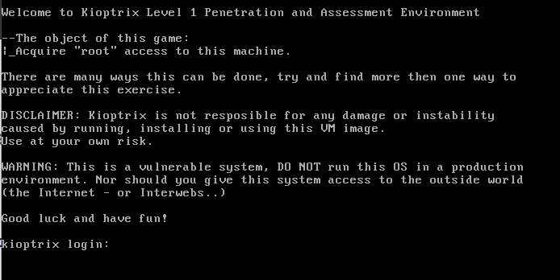

We have initialized the Vulnerable Machine Kioptix on our VM
Put both kaliandNew Machineon Bridge network

Step1:
So first we need to know the ip of machine
Let's find ip of kali using ifconfig and use netdiscover as the vulnerable machine is in same subnet

As IP is not displaying on Machine So we will use the tool
netdiscover -r xx.xx.xx.0/24 to check the whole subnet range

We got the Machines IP

another way to do it is via NMAP -sn